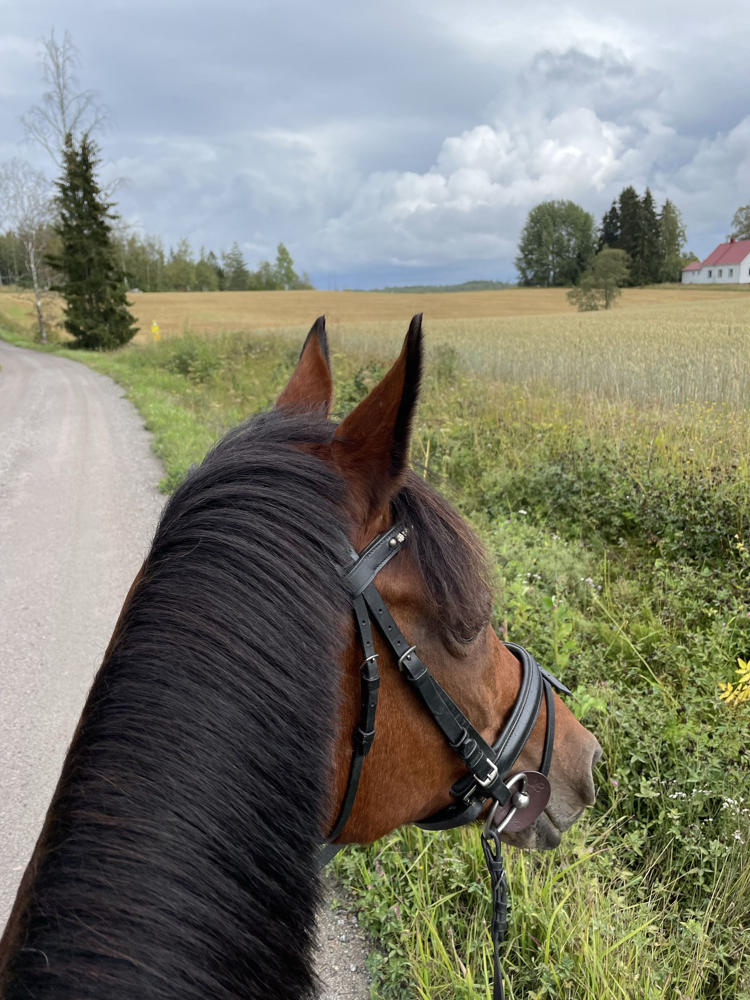

Ratsastus harrastuksena
Milloin aloitin ratsastuksen
Ratsastuksen aloitin kuusi vuotiaana. Tähän kirjoitetaan myöhemmin sinun oma tekstisi siitä, miten aloitit ratsastuksen.
Minun kokemukseni ratsastuksesta
Tähän tulee sinun oma kokemuksesi ratsastuksesta.
Maastoratsastus
Tähän voidaan kirjoittaa maastoratsastuksesta ja omista kokemuksistasi.

Mitä ratsastus opetti minulle
Tähän voidaan kirjoittaa siitä, mitä olet oppinut ratsastuksen ja hevosten parissa.
Nykyään
Tähän voidaan kirjoittaa siitä, millainen suhde sinulla on ratsastukseen nykyään.